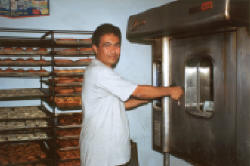
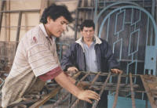

|
Grupo Objetivo de la Caja Municipal de Sullana
- Las pequeñas y microempresas de los
sectores productivos, comercio y servicios.
- Sectores agrícolas, agropecuario y
agroindustrial.
- Unidades familiares, sociales e
institucionales
- Sectores poblacionales de ingresos
medios y bajos
- Sectores poblacionales que no tienen
acceso al sistema financiero tradicional.
|


|